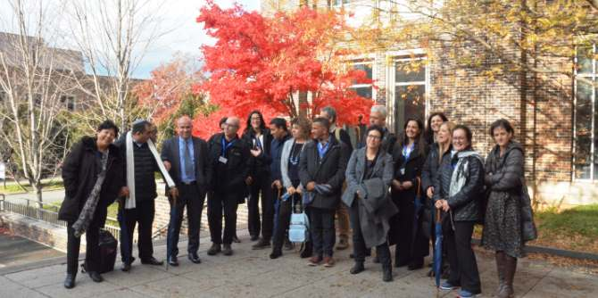

A seminar for graduates of the Mandel School for Educational Leadership entitled “Public Policy and Philanthropy: Are They Compatible?” took place at Duke University in North Carolina. Held from November 25 to December 2, the seminar examined the growing trend among non-profit organizations in general, and philanthropic foundations in particular, of addressing educational and social challenges at the systemic level, and attempting to increase impact in these areas by becoming involved in public policy.
Participants in the seminar examined the reciprocal relationships between the strategies of philanthropic foundations and public policy in the American context. The learning process focused on developing knowledge that will support the growth of beneficial, inter-sectoral partnerships adapted to the needs of Israeli society.

During the seminar, the Mandel graduates met with researchers, experts, and practitioners and were introduced to diverse global perspectives. In addition to theoretical study, they reviewed and discussed concrete cases as examples and drew conclusions based on a unique, case-based learning method developed at the Sanford School of Public Policy. This method has created a new language that uses practice-based knowledge, and which makes it possible to examine leadership and managerial challenges from a unique angle.
North Carolina is home to the Research Triangle Park, one of the world’s leading hi-tech research and development centers. The seminar's location thus provided an opportunity for deep exploration of additional topics with great relevance to the work of the fellows, including education and technology, and issues of educational innovation and entrepreneurship. The participants attended lectures by leading researchers, including Professor Robert Lefkowitz, the 2012 Nobel laureate in chemistry. They also met with founders of philanthropic foundations and non-profit organizations, who discussed their visions and theories of change.
The seminar gave the Mandel graduates an opportunity to expand their circle of influence and to promote the unique educational concepts and models they have developed. The seminar was a collaboration between the Mandel Graduate Unit and
Professor Joel Fleishman, founder of Duke’s Sanford School of Public Policy. It was led by
Dr. Granit Almog-Bareket, director of the Mandel Graduate Unit, and was co-facilitated by
Danny Bar Giora, director of the Mandel School for Educational Leadership.
{kind=link}